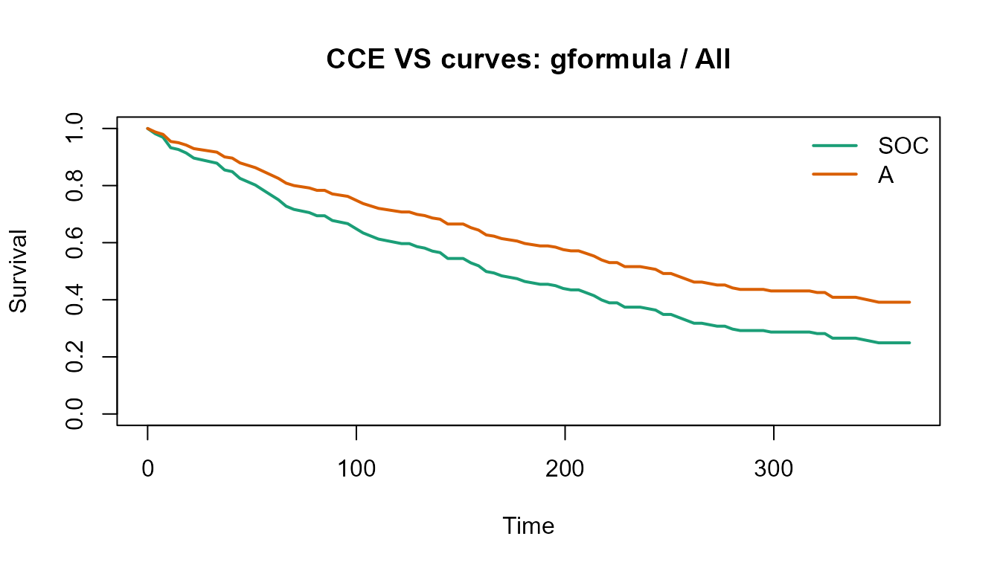
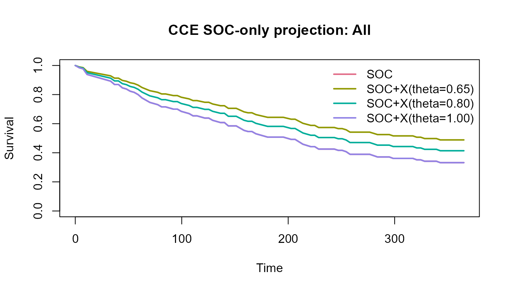

Overview
This article shows the full CCE workflow on bundled synthetic data:
- create normalized source tables
- validate the source tables before assembly
- build an analysis-ready cohort
- estimate a VS-mode comparison
- run SOC-only projection scenarios
- export results for reporting
Generate the example data
demo <- cce_demo_data(n = 240, seed = 42)
names(demo)
#> [1] "patient_baseline" "treatment_episodes" "outcomes"
#> [4] "biomarkers" "spec" "analysis_data"The demo generator returns the four normalized tables plus a ready-made analysis dataset.
str(demo$analysis_data)
#> Classes 'cce_dataset' and 'data.frame': 240 obs. of 13 variables:
#> $ patient_id : chr "P0001" "P0002" "P0003" "P0004" ...
#> $ index_date : Date, format: "2022-02-18" "2022-03-06" ...
#> $ age : num 68 65 72 62 72 48 79 72 63 51 ...
#> $ sex : chr "F" "F" "F" "M" ...
#> $ histology : chr "Adenocarcinoma" "Squamous" "Adenocarcinoma" "Adenocarcinoma" ...
#> $ stage_or_risk : chr "III" "IV" "IV" "IV" ...
#> $ ps : int 0 2 0 0 1 1 2 1 0 0 ...
#> $ arm : Factor w/ 2 levels "SOC","A": 2 1 2 1 1 1 2 1 1 2 ...
#> $ start_date : Date, format: "2022-02-18" "2022-03-06" ...
#> $ time : num 371 12 212 107 296 78 53 121 9 270 ...
#> $ event : int 1 1 0 1 1 1 1 1 1 1 ...
#> $ last_follow_up_date: Date, format: "2023-02-24" "2022-03-18" ...
#> $ subgroup : chr "High" "Low" "Low" "Low" ...
#> - attr(*, "spec")=List of 18
#> ..$ covariates : chr [1:4] "age" "sex" "stage_or_risk" "ps"
#> ..$ subgroup_biomarker : chr "PDL1"
#> ..$ endpoint : chr "os"
#> ..$ id_col : chr "patient_id"
#> ..$ index_date_col : chr "index_date"
#> ..$ regimen_col : chr "regimen_name"
#> ..$ treatment_start_col : chr "start_date"
#> ..$ index_flag_col : chr "is_index_treatment"
#> ..$ endpoint_col : chr "endpoint"
#> ..$ time_col : chr "time"
#> ..$ event_col : chr "event"
#> ..$ follow_up_col : chr "last_follow_up_date"
#> ..$ biomarker_name_col : chr "biomarker_name"
#> ..$ biomarker_value_col : chr "biomarker_value"
#> ..$ biomarker_baseline_flag_col: chr "is_baseline"
#> ..$ arm_map : Named chr [1:2] "SOC" "A"
#> .. ..- attr(*, "names")= chr [1:2] "SOC" "A"
#> ..$ missing_strategy : chr "complete_case"
#> ..$ time_zero_tolerance_days : int 0
#> ..- attr(*, "class")= chr "cce_spec"
#> - attr(*, "exclusions")='data.frame': 1 obs. of 2 variables:
#> ..$ reason: chr "missing_required_fields"
#> ..$ n : int 0
#> - attr(*, "validation_report")='data.frame': 0 obs. of 4 variables:
#> ..$ component: chr(0)
#> ..$ severity : chr(0)
#> ..$ issue : chr(0)
#> ..$ n : num(0)
#> - attr(*, "profile")=List of 5
#> ..$ overall :'data.frame': 1 obs. of 5 variables:
#> .. ..$ n : int 240
#> .. ..$ events : int 157
#> .. ..$ event_rate : num 0.654
#> .. ..$ median_follow_up: num 218
#> .. ..$ max_follow_up : num 705
#> ..$ by_arm :'data.frame': 2 obs. of 4 variables:
#> .. ..$ arm : chr [1:2] "A" "SOC"
#> .. ..$ n : int [1:2] 110 130
#> .. ..$ events : int [1:2] 65 92
#> .. ..$ event_rate: num [1:2] 0.591 0.708
#> ..$ by_subgroup :'data.frame': 2 obs. of 4 variables:
#> .. ..$ subgroup : chr [1:2] "High" "Low"
#> .. ..$ n : int [1:2] 129 111
#> .. ..$ events : int [1:2] 78 79
#> .. ..$ event_rate: num [1:2] 0.605 0.712
#> ..$ by_arm_subgroup:'data.frame': 4 obs. of 5 variables:
#> .. ..$ arm : chr [1:4] "A" "A" "SOC" "SOC"
#> .. ..$ subgroup : chr [1:4] "High" "Low" "High" "Low"
#> .. ..$ n : int [1:4] 53 57 76 54
#> .. ..$ events : int [1:4] 26 39 52 40
#> .. ..$ event_rate: num [1:4] 0.491 0.684 0.684 0.741
#> ..$ missingness :'data.frame': 13 obs. of 3 variables:
#> .. ..$ column : chr [1:13] "patient_id" "index_date" "age" "sex" ...
#> .. ..$ missing_n : num [1:13] 0 0 0 0 0 0 0 0 0 0 ...
#> .. ..$ missing_rate: num [1:13] 0 0 0 0 0 0 0 0 0 0 ...
#> ..- attr(*, "class")= chr "cce_profile"Round-trip the analysis specification
spec_path <- tempfile(fileext = ".yml")
write_cce_spec(demo$spec, spec_path)
roundtrip_spec <- read_cce_spec(spec_path)
roundtrip_spec$covariates
#> [1] "age" "sex" "stage_or_risk" "ps"Rebuild the analysis dataset from normalized tables
validate_cce_tables(
patient_baseline = demo$patient_baseline,
treatment_episodes = demo$treatment_episodes,
outcomes = demo$outcomes,
biomarkers = demo$biomarkers,
spec = roundtrip_spec
)
#> [1] component severity issue n
#> <0 rows> (or 0-length row.names)
analysis <- build_analysis_dataset(
patient_baseline = demo$patient_baseline,
treatment_episodes = demo$treatment_episodes,
outcomes = demo$outcomes,
biomarkers = demo$biomarkers,
spec = roundtrip_spec
)
head(analysis)
#> patient_id index_date age sex histology stage_or_risk ps arm start_date
#> 1 P0001 2022-02-18 68 F Adenocarcinoma III 0 A 2022-02-18
#> 2 P0002 2022-03-06 65 F Squamous IV 2 SOC 2022-03-06
#> 3 P0003 2022-06-02 72 F Adenocarcinoma IV 0 A 2022-06-02
#> 4 P0004 2022-03-15 62 M Adenocarcinoma IV 0 SOC 2022-03-15
#> 5 P0005 2022-05-26 72 M Adenocarcinoma IV 1 SOC 2022-05-26
#> 6 P0006 2022-05-02 48 M Adenocarcinoma IV 1 SOC 2022-05-02
#> time event last_follow_up_date subgroup
#> 1 371 1 2023-02-24 High
#> 2 12 1 2022-03-18 Low
#> 3 212 0 2022-12-31 Low
#> 4 107 1 2022-06-30 Low
#> 5 296 1 2023-03-18 High
#> 6 78 1 2022-07-19 Low
profile_cce_dataset(
data = analysis,
arm = "arm",
time = "time",
event = "event",
subgroup = "subgroup"
)
#> CCE dataset profile
#> n events event_rate median_follow_up max_follow_up
#> 1 240 157 0.6541667 218 705VS-mode estimation
vs_fit <- fit_cce_vs(
data = analysis,
arm = "arm",
time = "time",
event = "event",
covariates = c("age", "sex", "stage_or_risk", "ps"),
subgroup = "subgroup",
tau = 365,
landmark_times = c(180, 365),
bootstrap = 20,
seed = 100
)
summary(vs_fit)
#> CCE VS result
#> Label: ok
#> Warnings: none
#> mode method subgroup tau rmst_arm0 rmst_arm1 delta_rmst landmark_time
#> 1 vs gformula All 365 188.1689 229.3371 41.16822 180
#> 2 vs gformula All 365 188.1689 229.3371 41.16822 365
#> 3 vs iptw_km All 365 205.7951 259.6433 53.84820 180
#> 4 vs iptw_km All 365 205.7951 259.6433 53.84820 365
#> 5 vs iptw_cox All 365 212.9197 250.6222 37.70248 180
#> 6 vs iptw_cox All 365 212.9197 250.6222 37.70248 365
#> survival_arm0 survival_arm1 delta_survival delta_rmst_lower_ci
#> 1 0.4739779 0.6057646 0.1317867 10.780157
#> 2 0.2492317 0.3914337 0.1422019 10.780157
#> 3 0.5143146 0.7197778 0.2054632 -6.929098
#> 4 0.3307018 0.4798347 0.1491330 -6.929098
#> 5 0.5536321 0.6708851 0.1172530 9.650522
#> 6 0.3328632 0.4758616 0.1429984 9.650522
#> delta_rmst_upper_ci delta_survival_lower_ci delta_survival_upper_ci
#> 1 51.67511 0.032575899 0.1572542
#> 2 51.67511 0.012879768 0.1960966
#> 3 72.52610 0.003351216 0.2710959
#> 4 72.52610 0.031542439 0.2356857
#> 5 55.57671 0.031029790 0.1685626
#> 6 55.57671 0.034438024 0.2109653
plot(vs_fit, method = "gformula", subgroup = "All")
The tidy effects table is designed to feed downstream reports or dashboards.
head(as_effects_df(vs_fit))
#> mode method subgroup tau rmst_arm0 rmst_arm1 delta_rmst landmark_time
#> 1 vs gformula All 365 188.1689 229.3371 41.16822 180
#> 2 vs gformula All 365 188.1689 229.3371 41.16822 365
#> 3 vs iptw_km All 365 205.7951 259.6433 53.84820 180
#> 4 vs iptw_km All 365 205.7951 259.6433 53.84820 365
#> 5 vs iptw_cox All 365 212.9197 250.6222 37.70248 180
#> 6 vs iptw_cox All 365 212.9197 250.6222 37.70248 365
#> survival_arm0 survival_arm1 delta_survival delta_rmst_lower_ci
#> 1 0.4739779 0.6057646 0.1317867 10.780157
#> 2 0.2492317 0.3914337 0.1422019 10.780157
#> 3 0.5143146 0.7197778 0.2054632 -6.929098
#> 4 0.3307018 0.4798347 0.1491330 -6.929098
#> 5 0.5536321 0.6708851 0.1172530 9.650522
#> 6 0.3328632 0.4758616 0.1429984 9.650522
#> delta_rmst_upper_ci delta_survival_lower_ci delta_survival_upper_ci
#> 1 51.67511 0.032575899 0.1572542
#> 2 51.67511 0.012879768 0.1960966
#> 3 72.52610 0.003351216 0.2710959
#> 4 72.52610 0.031542439 0.2356857
#> 5 55.57671 0.031029790 0.1685626
#> 6 55.57671 0.034438024 0.2109653Diagnostics are returned in a machine-readable table.
head(as_diagnostics_df(vs_fit))
#> method subgroup metric value threshold status
#> 1 iptw_km All max_weight 1.30235194 50.0 ok
#> 2 iptw_km All ess_total 238.61717626 NA info
#> 3 iptw_km All ess_arm0 129.23701922 NA info
#> 4 iptw_km All ess_arm1 109.38039627 NA info
#> 5 iptw_km All max_abs_smd_before 0.12160316 0.1 warning
#> 6 iptw_km All max_abs_smd_after 0.00168784 0.1 okSOC-only projection
soc_fit <- project_soc_only(
data = analysis,
arm = "arm",
soc_level = "SOC",
time = "time",
event = "event",
subgroup = "subgroup",
tau = 365,
hr_scenarios = c(0.65, 0.80, 1.00),
target_delta_rmst = 30,
prior_mean_log_hr = log(0.8),
prior_sd_log_hr = 0.25,
bootstrap = 20,
seed = 200
)
summary(soc_fit)
#> CCE SOC-only projection
#> Label: Projection (assumption-based)
#> mode method subgroup scenario_hr tau rmst_arm0 rmst_arm1
#> 1 soc_only projection_ph All 0.65 365 205.9825 248.3459
#> 2 soc_only projection_ph All 0.65 365 205.9825 248.3459
#> 3 soc_only projection_ph All 0.80 365 205.9825 228.8191
#> 4 soc_only projection_ph All 0.80 365 205.9825 228.8191
#> 5 soc_only projection_ph All 1.00 365 205.9825 205.9825
#> 6 soc_only projection_ph All 1.00 365 205.9825 205.9825
#> delta_rmst landmark_time survival_arm0 survival_arm1 delta_survival
#> 1 42.36347 182 0.5076923 0.6436361 0.13594377
#> 2 42.36347 365 0.3320886 0.4884444 0.15635574
#> 3 22.83660 182 0.5076923 0.5814073 0.07371497
#> 4 22.83660 365 0.3320886 0.4140027 0.08191410
#> 5 0.00000 182 0.5076923 0.5076923 0.00000000
#> 6 0.00000 365 0.3320886 0.3320886 0.00000000
#> required_hr pos_proxy delta_rmst_lower_ci delta_rmst_upper_ci
#> 1 0.7429734 0.384 37.70481 45.06949
#> 2 0.7429734 0.384 37.70481 45.06949
#> 3 0.7429734 0.384 20.54640 24.13302
#> 4 0.7429734 0.384 20.54640 24.13302
#> 5 0.7429734 0.384 0.00000 0.00000
#> 6 0.7429734 0.384 0.00000 0.00000
#> delta_survival_lower_ci delta_survival_upper_ci
#> 1 0.11746102 0.14767173
#> 2 0.15199173 0.15724805
#> 3 0.06453981 0.07902597
#> 4 0.07934582 0.08192000
#> 5 0.00000000 0.00000000
#> 6 0.00000000 0.00000000
plot(soc_fit, subgroup = "All")
head(as_effects_df(soc_fit))
#> mode method subgroup scenario_hr tau rmst_arm0 rmst_arm1
#> 1 soc_only projection_ph All 0.65 365 205.9825 248.3459
#> 2 soc_only projection_ph All 0.65 365 205.9825 248.3459
#> 3 soc_only projection_ph All 0.80 365 205.9825 228.8191
#> 4 soc_only projection_ph All 0.80 365 205.9825 228.8191
#> 5 soc_only projection_ph All 1.00 365 205.9825 205.9825
#> 6 soc_only projection_ph All 1.00 365 205.9825 205.9825
#> delta_rmst landmark_time survival_arm0 survival_arm1 delta_survival
#> 1 42.36347 182 0.5076923 0.6436361 0.13594377
#> 2 42.36347 365 0.3320886 0.4884444 0.15635574
#> 3 22.83660 182 0.5076923 0.5814073 0.07371497
#> 4 22.83660 365 0.3320886 0.4140027 0.08191410
#> 5 0.00000 182 0.5076923 0.5076923 0.00000000
#> 6 0.00000 365 0.3320886 0.3320886 0.00000000
#> required_hr pos_proxy delta_rmst_lower_ci delta_rmst_upper_ci
#> 1 0.7429734 0.384 37.70481 45.06949
#> 2 0.7429734 0.384 37.70481 45.06949
#> 3 0.7429734 0.384 20.54640 24.13302
#> 4 0.7429734 0.384 20.54640 24.13302
#> 5 0.7429734 0.384 0.00000 0.00000
#> 6 0.7429734 0.384 0.00000 0.00000
#> delta_survival_lower_ci delta_survival_upper_ci
#> 1 0.11746102 0.14767173
#> 2 0.15199173 0.15724805
#> 3 0.06453981 0.07902597
#> 4 0.07934582 0.08192000
#> 5 0.00000000 0.00000000
#> 6 0.00000000 0.00000000Export files
out_dir <- tempfile(pattern = "cce-demo-")
write_cce_results(vs_fit, out_dir)
list.files(out_dir)
#> [1] "curves.csv" "diagnostics.csv" "effects.csv" "results.json"The written directory contains:
results.jsoncurves.csveffects.csvdiagnostics.csv
results.json also stores the covariate set, threshold
settings, source spec, exclusion summary, and dataset profile for
auditability.
Notes
The bundled demo is useful for package validation and documentation.
For public patient-level data, see the companion article on
survival::veteran.